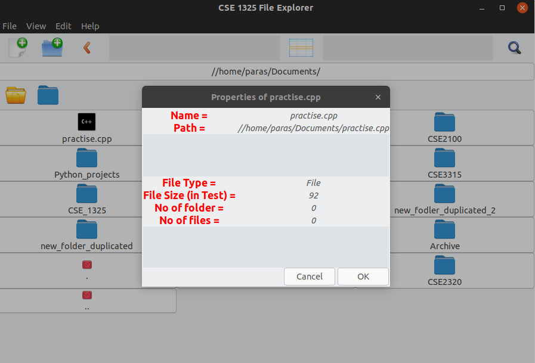
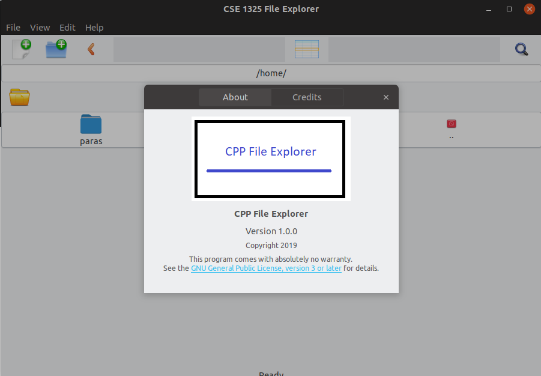

Features of CPP File Explorer
Remembers current bookmarks, last opened location.
Creating new files/folders.
Navigating to a specified direcotry by clicking or entering path.
Opening files folders.
Opening terminal at a specified folder.
Cut/Copy Paste functionality.
Properties of files/folder.
To run CPP File Explorer
Clone this repository and change directory to the cloned folder. Then:
-
After you are in the main folder of the repository type:
make -
If you have all the required dependicy you should have the executible then type:
./fileexplorer
Some screenshots

File explorer opened at a random location.
File explorer showing properties of an item.
File explorer showing about dialogue.